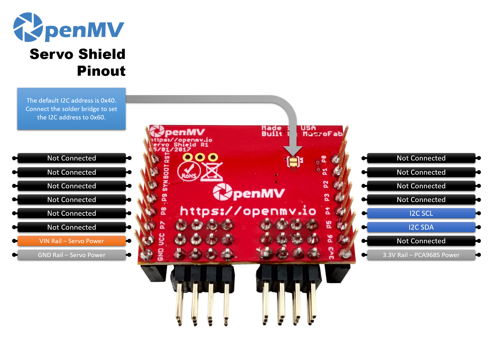

Servo Shield¶
Servo Shield 使用 PCA9685 伺服／PWM 控制器，可透過 I2C 從 OpenMV Cam 並聯驅動最多八個玩具級伺服馬達。

如需完整的資料表、照片與訂購資訊，請參閱 Servo Shield 產品頁面。
重點特色¶
PCA9685 伺服／PWM 控制器
透過 I2C 提供八個獨立的伺服通道
可與 Motor Shield 及 Pan and Tilt Shield 堆疊使用
接腳圖¶
{kind=link}

接腳參考¶
接腳 |
功能 |
|---|---|
P4 |
I²C SCL——通往 PCA9685 的時脈 |
P5 |
I²C SDA——通往 PCA9685 的資料 |
VIN 電源軌 |
為伺服馬達供電（取自相機的 VIN 接腳） |
3.3V 電源軌 |
為 PCA9685 邏輯電路供電 |
GND 電源軌 |
伺服馬達與相機的共用接地 |
預設的 I²C 位址為 0x40。連接板載焊接跳線可將位址變更為 0x60。
備註
本擴充板直接從相機的 VIN 接腳汲取伺服馬達電力。任何 OpenMV Cam 的 USB 皆不會供電給 VIN，因此 VIN 必須由外部供應（電池、實驗室電源供應器或類似裝置）——請選擇額定電流足以負荷您計劃驅動的所有伺服馬達合計堵轉電流的電源。
使用方式¶
透過 I²C 經由 PCA9685 驅動這八個伺服通道。各伺服馬達的脈衝寬度範圍各異，因此請調整 MIN_US 與 MAX_US 以符合您的伺服馬達——典型值約為 1000–2000 µs:
import time
from machine import SoftI2C, Pin
class PCA9685:
"""Minimal PCA9685 driver — 12-bit PWM on any of 8 channels."""
def __init__(self, bus, address=0x40, freq=50):
self._bus = bus
self._addr = address
bus.writeto_mem(address, 0x00, b"\x00") # reset Mode1
prescale = round(25_000_000 / (4096 * freq)) - 1
bus.writeto_mem(address, 0x00, b"\x10") # sleep
bus.writeto_mem(address, 0xFE, bytes([prescale])) # prescale
bus.writeto_mem(address, 0x00, b"\x00") # wake
time.sleep_us(5)
bus.writeto_mem(address, 0x00, b"\xA1") # restart + AI + allcall
self._period_us = 1_000_000 // freq
def set_duty(self, channel, duty):
duty &= 0xFFF # 12-bit
if duty == 0:
on, off = 0, 0x1000 # FULL_OFF
elif duty == 0xFFF:
on, off = 0x1000, 0 # FULL_ON
else:
on, off = 0, duty
self._bus.writeto_mem(
self._addr, 0x06 + 4 * channel,
bytes([on & 0xFF, on >> 8, off & 0xFF, off >> 8]))
def set_us(self, channel, pulse_us):
self.set_duty(channel, (pulse_us * 4096) // self._period_us)
MIN_US = 1000 # full-left pulse width (microseconds)
MAX_US = 2000 # full-right pulse width
bus = SoftI2C(scl=Pin("P4"), sda=Pin("P5"))
pca = PCA9685(bus, address=0x40, freq=50)
def angle(channel, deg):
pca.set_us(channel, MIN_US + (deg * (MAX_US - MIN_US)) // 180)
while True:
for ch in range(8):
angle(ch, 0)
time.sleep_ms(2000)
for ch in range(8):
angle(ch, 180)
time.sleep_ms(2000)
PCA9685 也能以任意頻率處理一般的 12 位元 PWM——重複使用同一個類別並搭配 set_duty（0–4095），即可例如以 1 kHz 在通道 0 上漸變控制 LED。下方的輔助函式會將 0.0–100.0% 的浮點數縮放至晶片的 0–4095 工作週期範圍:
import time
from machine import SoftI2C, Pin
bus = SoftI2C(scl=Pin("P4"), sda=Pin("P5"))
pca = PCA9685(bus, address=0x40, freq=1000)
def brightness(channel, pct):
pca.set_duty(channel, int(pct * 4095 / 100))
while True:
# Ramp up 0 → 100%.
for pct in range(101):
brightness(0, float(pct))
time.sleep_ms(20)
# Ramp down 100 → 0%.
for pct in reversed(range(101)):
brightness(0, float(pct))
time.sleep_ms(20)